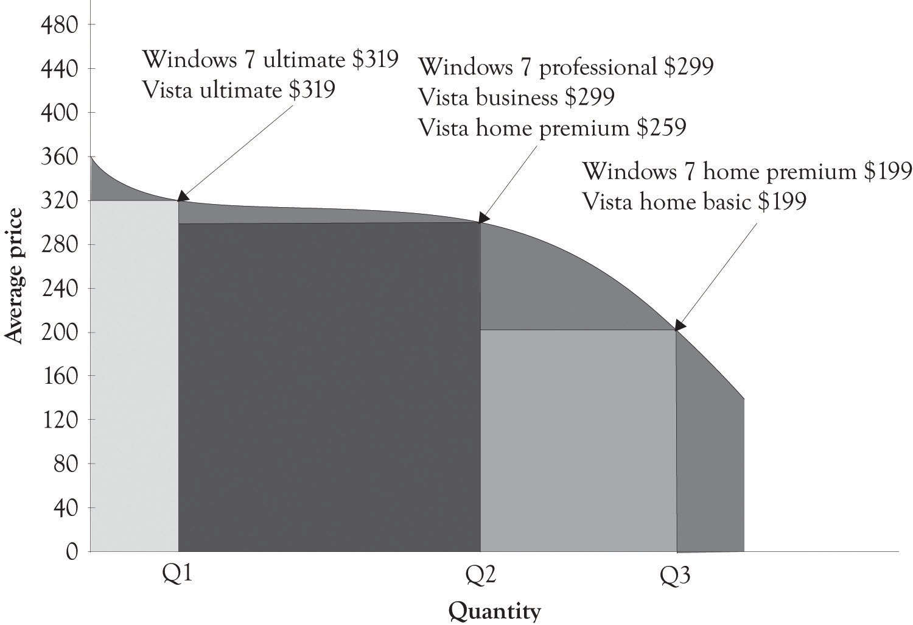

Microsoft over the past couple of years has jumped on the price discrimination bandwagon. It was difficult for them to engage in product and price differentiation because they were generating piles of cash as a monopoly. Microsoft is a monopolist in the operating systems arena and with their office suite of applications. The marginal cost to produce incremental levels of software and other information goods, such as DVDs and music, is essentially zero. But as usual, the fixed costs are substantial, and because Microsoft is a price setter, they chose to sell at a price that covers their fixed costs but still permits them to make a large profit without irritating too many consumers.This section has been adapted from a paper by Gopal and Sanders (2000).
For many years, Microsoft was not interested in price discrimination based on geography, market segment, or per capita GDP. But Microsoft had to move toward price discrimination because the willingness-to-pay for software was related to software piracy. Students and individuals with low incomes are price-sensitive and will simply turn to piracy when the price exceeds their willingness-to-pay. They also had to offer certain market segments lower prices because piracy was essentially rampant. Microsoft began to realize that they were leaving money on the table because they did not take dramatic steps to price discriminate through product differentiation. They have, in general, avoided unwanted attention by the FTC by attempting to follow the three guidelines outlined in Chapter 2 "Fundamentals of Product and Price Differentiation".
Sometimes product differentiation does not work.Ihnatko (2009). Microsoft tried to differentiate the Vista operating system (see the snap shot of Windows 7 and Vista Versioning in Figure 5.6 "Windows 7 and Vista Product Differentiation"). But Vista never gained legs for a variety of technical, customer support and marketing reasons. The product was not ready for prime time. They continued to product differentiate and price discriminate with the release of Windows 7. Home Premium was priced at $199.99, Professional at $299.99, and Ultimate at $319.99. They definitely used the Goldilocks versioning. It appears that Windows 7 was a success because it was a stable, fast, and friendly operating system.
Of late, Microsoft has also had to contend with Google’s foray into the online office application suite called Google Docs and IBM’s offering of open-sourced Linux-based applications. The competition is heating up and the Microsoft monopoly is under attack on many fronts. Monopolies are often transitory as the competition looks for a crack in the armor and a chance to drink from the fountain of plenty. The growth of cloud computing (where data storage and CPU cycles move toward the utility model) and the availability of net-centric applications could continue to erode Microsoft’s market share. They have, however, started to address the attack by introducing a cloud-based Office 365 and the Azure development platform.
Figure 5.6 Windows 7 and Vista Product Differentiation
